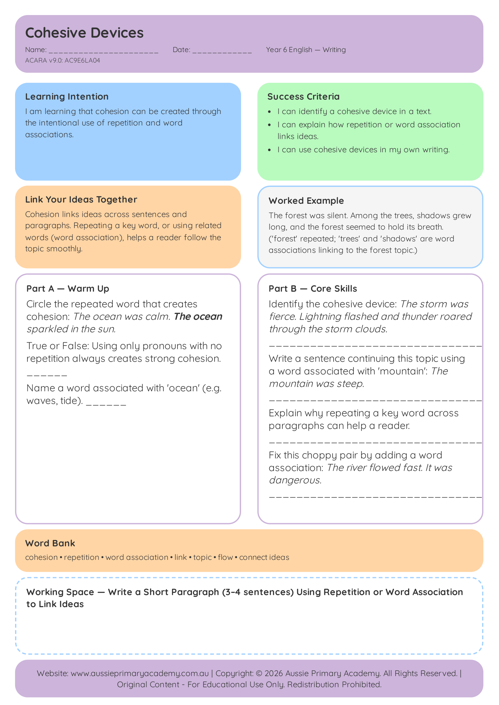

Year 6 · English · Free Printable
Cohesive Devices
Use referencing, connectives and lexical cohesion to organise ideas across paragraphs.
Worksheet Preview

Learning Intention
Students use cohesive devices to link and organise ideas across paragraphs.
Australian Curriculum
Supports Year 6 English learning. (AC9E6LA04)
Teacher Notes
Highlight cohesive devices in a shared text before students apply them in writing.
Skills Practised
- Text cohesion
- Connective use
- Paragraph organisation
About This Worksheet
This Year 6 English worksheet helps students recognise and use cohesive devices that connect ideas across sentences and paragraphs. The goal is clearer, more organised writing that is easier for a reader to follow.
What Students Practise
- Using connectives to show relationships between ideas.
- Using referencing to avoid unnecessary repetition.
- Maintaining cohesion across a text.
How to Use It
Read the examples together and ask students what each cohesive device connects. Then have students explain how a sentence changes when the connective or reference is changed.
Parent Tip
When reading together, notice words such as however, therefore, this, these and they. Ask what each word refers to or what relationship it shows.